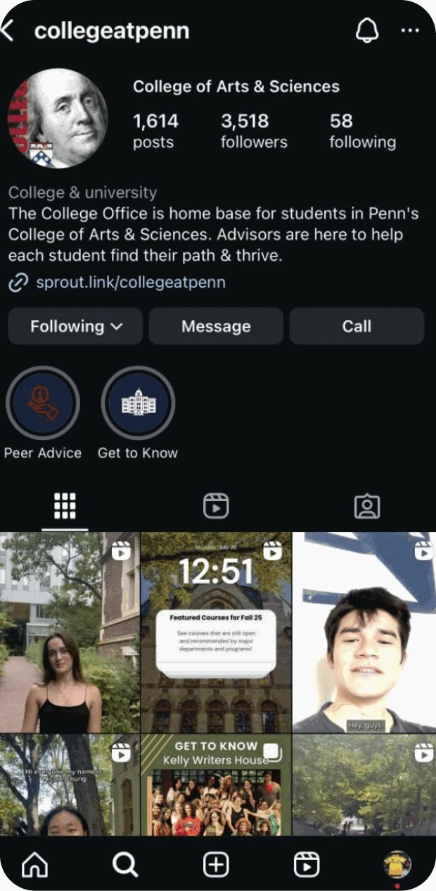
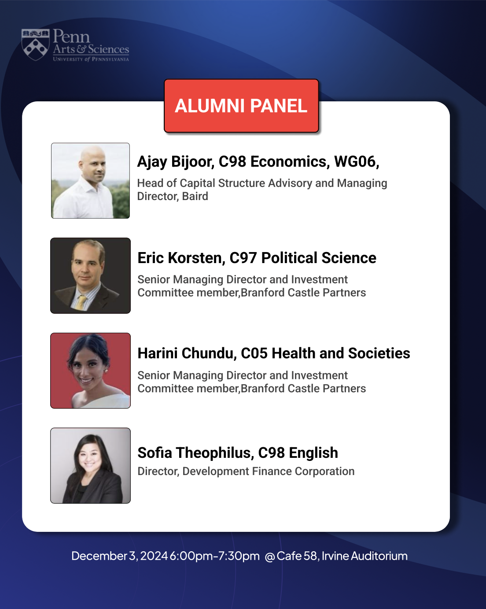
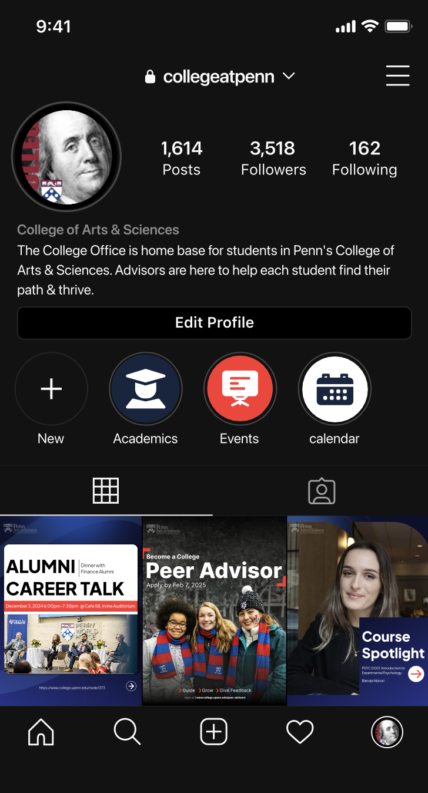
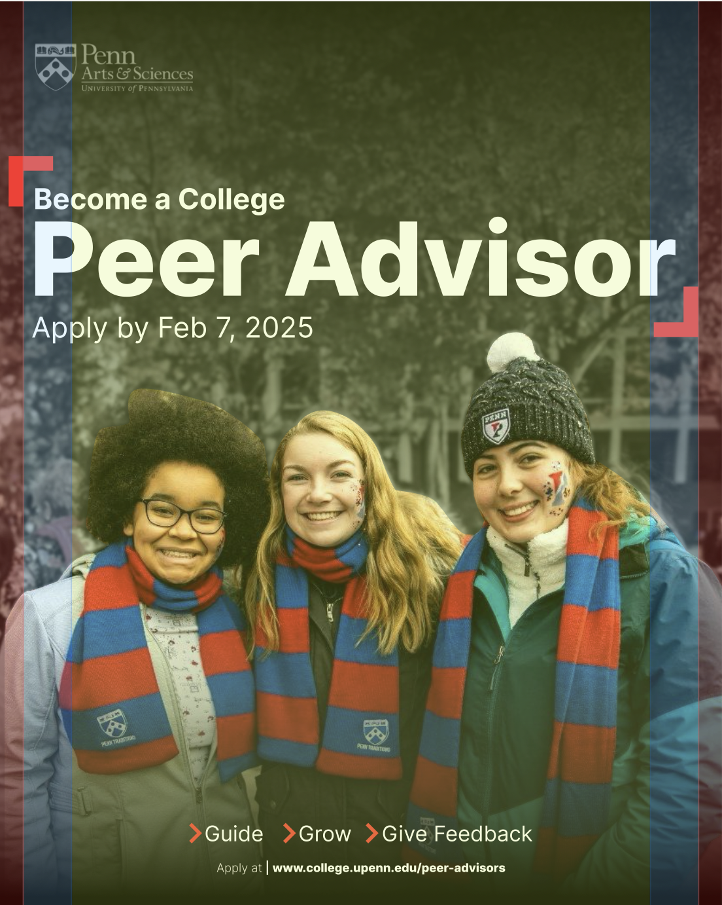
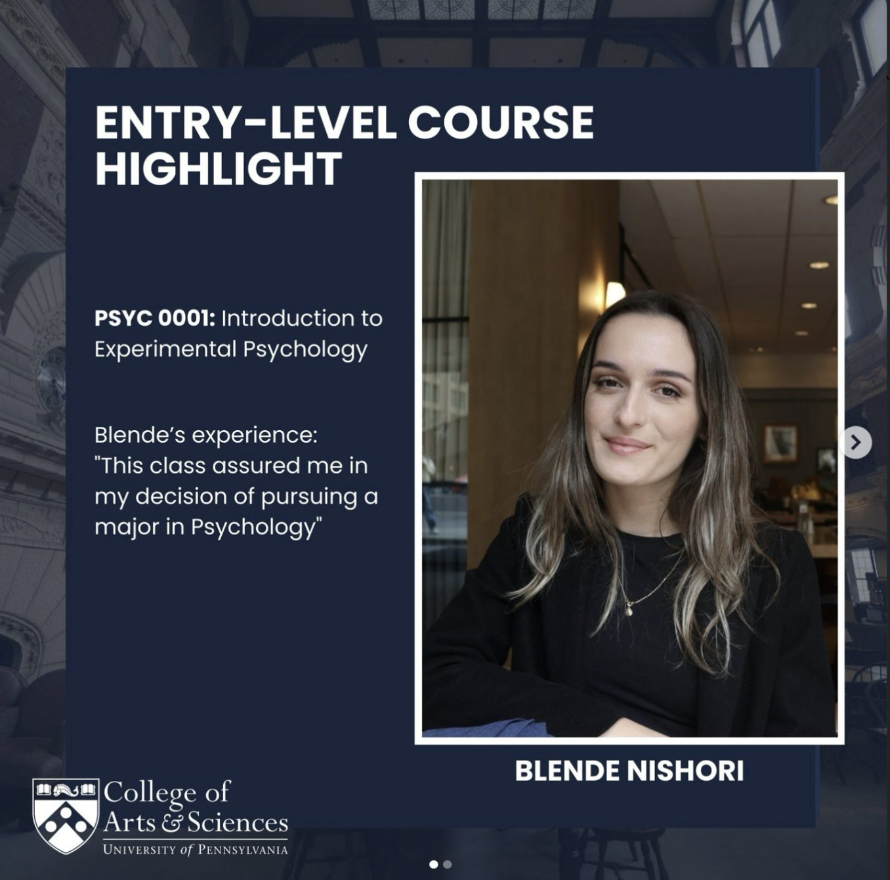
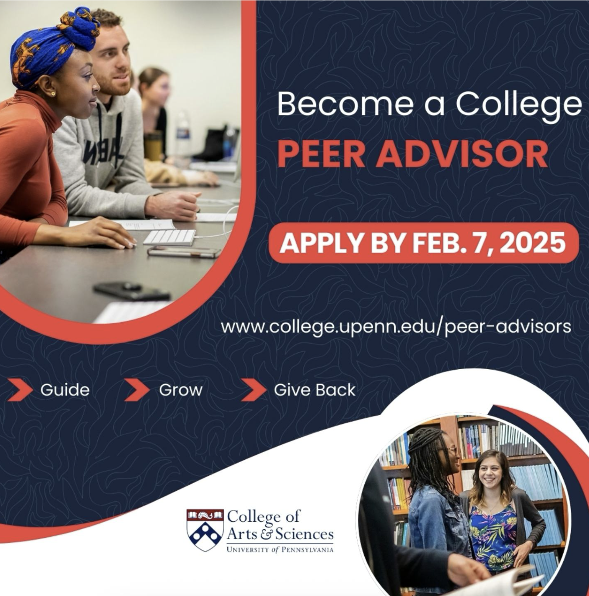
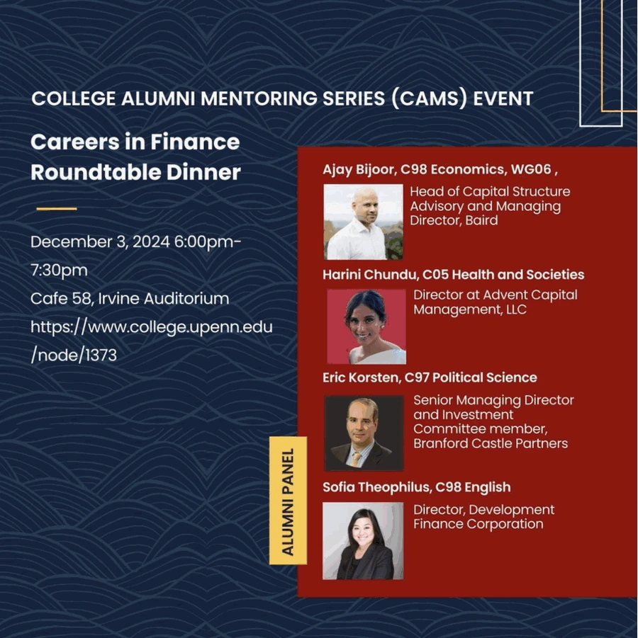

Inconsistent hierarchy
Changing type styles and layouts make every post feel like a new starting point.
Giving a prestigious institution a clear, student-facing voice
I reimagined Penn Arts & Sciences’ social media presence to close the gap between the institution’s academic prestige and the way its student-facing content appeared in the feed. The redesign brings useful information, student stories and opportunities into one recognizable visual system.
01 · Brand audit
The account shares the right material—peer advice, courses, events and student experiences—but the presentation changes from post to post. The feed feels assembled from separate flyers instead of designed as one living brand.

Changing type styles and layouts make every post feel like a new starting point.
Headlines, supporting details, portraits and logos compete for attention.
The feed does not build a dependable rhythm from Penn’s recognizable palette.
Strong student stories are present, but the design rarely makes them feel memorable.
Square, flyer-like posts lose the impact of Instagram’s taller 4:5 canvas.
02 · Brand gap
Penn Arts & Sciences represents rigorous Ivy League education alongside a vibrant, diverse student experience. Its social presence needed to express both at the same time.
The opportunity was not to change Penn’s identity—it was to make that identity visible in every post.
03 · Positioning strategy
I built the direction around one simple idea: Penn should feel authoritative without becoming distant. Every post leads with one story, one visual focus and one clear reading order.
People, experiences and opportunities become the entry point.
Bold headlines create clarity without flyer-style density.
Portraits and moments carry the personality of the message.
A shared grid, palette and spacing build recognition over time.
04 · Redesigned posts
The visual language stays consistent while the expression changes with the content. Course spotlights foreground personal experience, advisory posts feel communal, and alumni events use a confident editorial structure.


05 · Mockup & design breakdown
The feed mockup checks how the posts work together at browsing size. The breakdown overlays show how the 4:5 canvas protects essential content while keeping headlines and calls to action visible in different placements.


06 · Before / after
The comparison shows where the redesign creates the biggest shift: clearer reading order, stronger imagery, more disciplined color and content designed for the vertical feed.
Moves from a dense square announcement to a portrait-led story with one immediate hook.

Turns a packed information graphic into a warm community message with a clear deadline.

Reframes an event flyer as a structured editorial series that can unfold across a carousel.

07 · Expected outcomes
This is an independent design concept, so the outcomes below describe the intended design value rather than measured campaign results.
A cohesive feed better reflects the credibility of Penn Arts & Sciences.
Sharper hierarchy helps students understand each post more quickly.
Visually focused, information-rich posts are easier to remember and pass on.